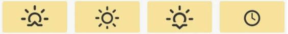

우리는 낮 시간에 일합니다.
근무 리듬을 낮 시간으로 바꿀 수 없다면 공장과의 협업을 포기하는 편이 낫습니다.
이미 밤에 일해 왔고 근무와 휴식 리듬을 바꾸지 못했다면, 협업이 종료될 수 있음을 각오하십시오.
자신의 시간대 기준으로 낮에 해당하는 최소 6시간을 업무에 배정하십시오. TeamTime에 보고가 하나도 없는 평일은 무급 휴무로 간주됩니다(일일 보고 규정 참조).
매 근무 주마다 TeamTime 시스템에 해당하는 실제 근무 시간이 기록되도록 하십시오. TeamTime에 보고가 하나도 없는 근무 주는 무급 휴가로 간주됩니다.